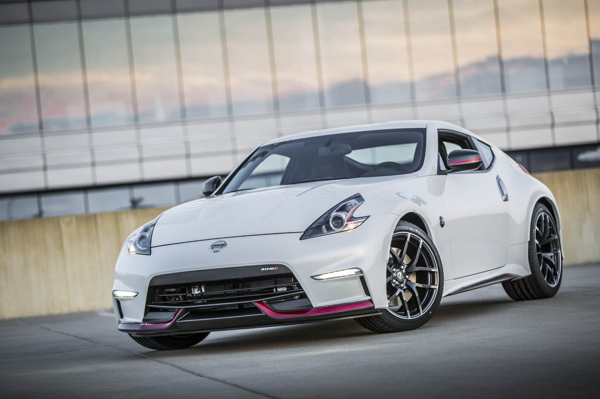

Nissan 370z
 
Precio final: 36.400€
Diseño exterior
A pesar de haber sido lanzado en 2009, su diseño se mantiene fresco gracias a las últimas actualizaciones, en las que fue dotado de unos nuevos LEDs diurnos. Su estampa se mantiene compacta y deportiva gracias a unos trazos muy marcados. El Nissan 370Z puede presumir de ofrecer una estética rara y diferenciada, poco convencional en los tiempos que corren. Su imagen es muy agresiva, destacando su frontal muy afilado en el que los grupos ópticos con forma de flecha ponen su granito de arena, aunque es la trasera la parte más destacada del conjunto gracias a sus hombros muy anchos que esconden unos pasos de rueda muy prominentes.
Diseño Interior
Su habitaculo es estrictamente biplaza. Está bien rematado y tiene una dotación de equipamiento correcta, pero no llega a ofrecer elementos premium como hacen sus rivales. Es un coche deportivo de dimensiones contenidas, pero ofrece un interior relativamenrte espacioso y buena ergonomía, con una postura de conducción muy pegada al suelo.
Volver